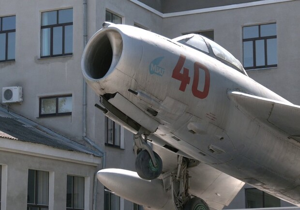

Я ніколи не вважала найкращим варіантом розповісти про себе – розписати всю свою біографію та хронологію життя. Найкраще, що може зробити людина, яка хоче, щоб люди, яким навіть не доводилося бачити її наживо, зрозуміли, що вона із себе уявляє і перейнялися її історією - це розповісти про справу від якої у неї горять очі або колись горіли. Кожен змінюється на очах, коли мова заходить про його справу життя і якщо ти бачиш, що нейрохірург розповідає про свою професію з такою легкістю, ніби він картини пише, то це воно. Сотні людей матимуть сотні варіацій як розповісти про одну річ, але байдужих слухати не будуть. Почують і помітять того єдиного, кому навіть говорити не варто, щоб усі зрозуміли, що він готовий життя покласти за те, чим займається. Красиво і лірично розповісти про справу, займаючись якою я втрачала рахунок часу, не вийде, оскільки це була вузькоспрямована технічна галузь. Адже технар не напише в ліричному ключі про те, чим відрізняється несучий гвинт у гелікоптері від рульового. Чи не напише що таке крен чи тангаж в авіації. Проте головна причина інша. Красиво і лірично насамперед не вдасться написати тому що ця історія не мала продовження, вона мала лише кінець і він не був добрим.
Почалося все з того моменту як у мене тільки-но почався усвідомлений вік і я почала щось розуміти. Досі в мені зберігаються спогади трирічної мене, коли я мріяла, бачила себе успішною та щасливою. Але успішною у чому? З того моменту почалися пошуки свого місця у світі та пошуки цього світу у мені. Ще тоді прийшло усвідомлення, що дорога до миру в мені - це знаходження того, заради чого ти захочеш і вставати о шостій ранку, і присвятити цій справі свій єдиний вихідний і всі похідні, які виходять із одержимості своїм шляхом. А все тому, що ти не сприймаєш цю справу як частину себе. Ти сприймаєш цю справу як повноцінну окрему себе, лише в іншому фізичному прояві. скільки ж у мене було спроб, що я тільки не перепробувала, щоб зовсім незадовго до вступу в універ вирішити, чому я саме присвячую життя. Авіація для мене стала однією із життєво необхідних речей. Як вода та сон для будь-якого живого організму. Виходило так, що чим би я не займалася, на підсвідомості крутилися думки про майбутнє в авіації, про моє місце в цій сфері і про те, що хочу дати світу авіації.
Харків, 24.02.2022 5:00 Прокидаюся від, тоді ще незрозумілих мені звуків, і злюся, адже мені рано вставати в універ, а я могла ще спати та спати. Тоді ще було незрозуміло, що це зовсім не важливо, з того моменту все стало неважливим. Уся Україна, весь світ знає, що вони зробили з Ха. Я виїхала звідти через два тижні після початку повномасштабної і ніби залишила душу там. Можливо тому, що людину з Харкова вивезти можна, а Ха з людини ні? Я почала багато порівнювати і куди б я не поїхала, як добре не було б у новому місці, я шукаю там Харків. Моїй мрії провести студентські роки у цьому місті та розпочати свій шлях авіаконструкторки не дали збутися. Досі, коли в соцмережах трапляються відео на тему авіації, я миттєво їх перегортаю, тому що досі неприємно і боляче усвідомлювати, що все склалося так, як склалося. Іноді я думаю, чи була б я щасливішою якщо б продовжила рухатись у цьому напрямку і якщо б не настав кінець історії авіації у моєму житті. А може, це просто пауза?
